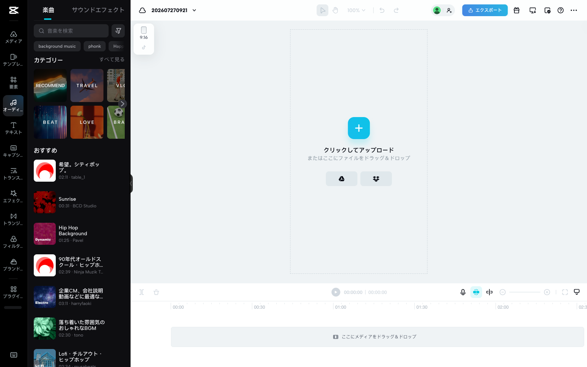
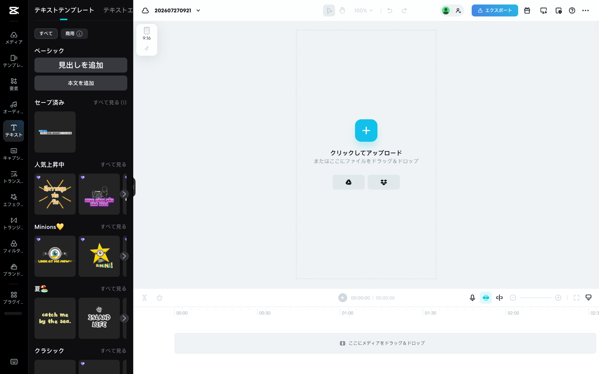
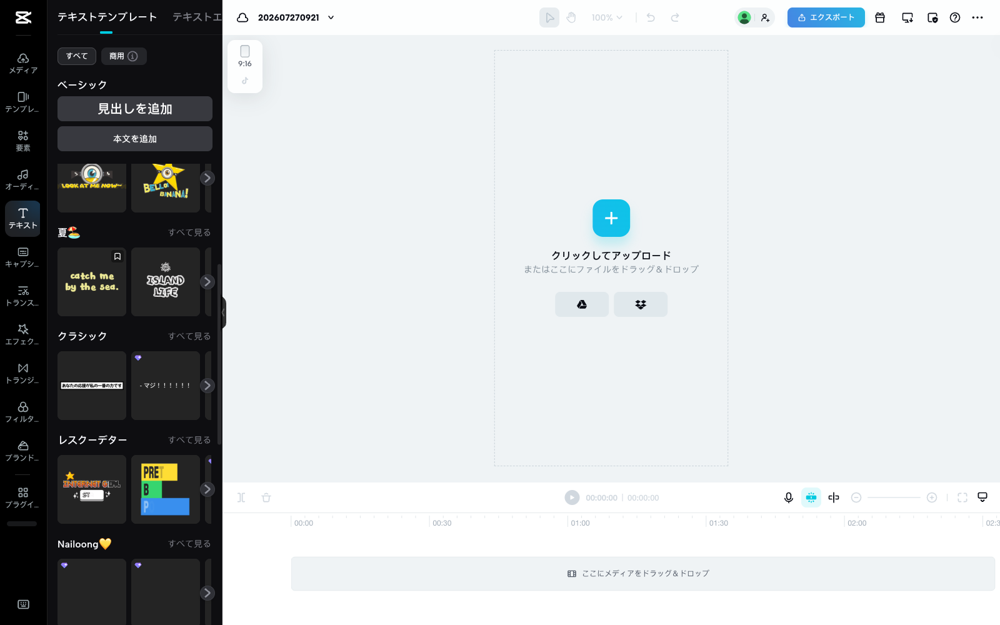
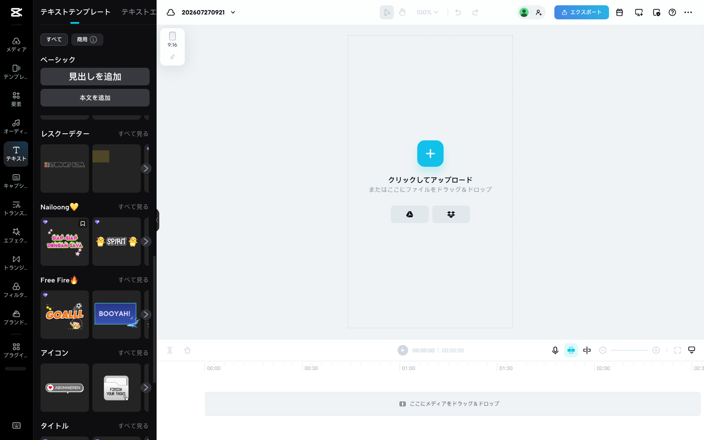
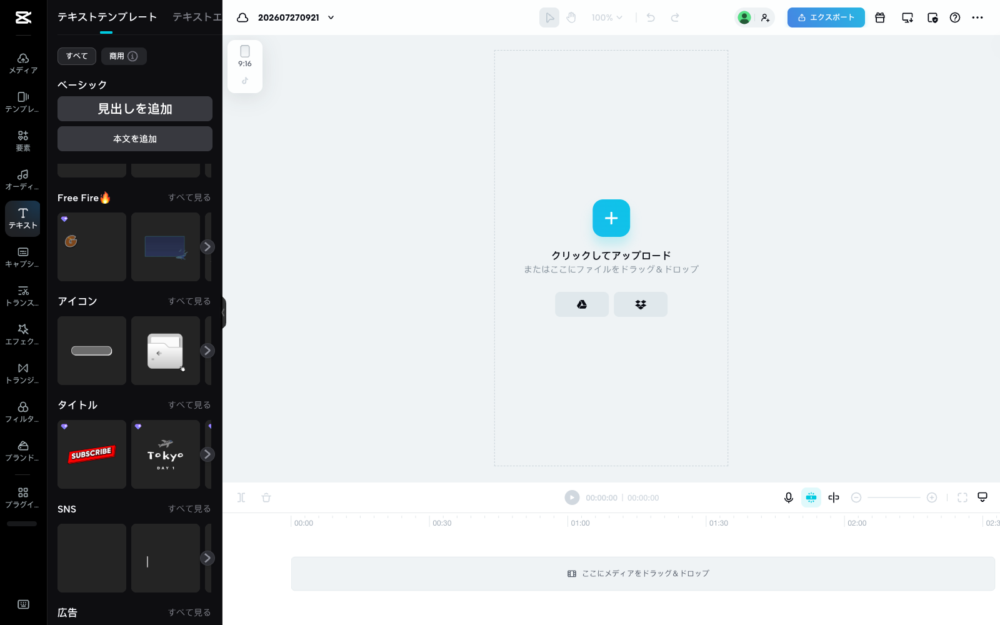

🎵 音楽 (BGM)
CapCut の 「オーディオ → おすすめ」 に あった 実物。 番号 で 選択。
1
希望。シティポップ。
table_1 · 02:11
シティポップ / おしゃれ / 大人
2
Sunrise
BCD Studio · 00:31
爽快 / エピック / 短尺
3
Hip Hop Background
Pavel · 01:25
ヒップホップ / クール
4
90年代オールドスクール・ヒップホップ
Ninja Muzik Tokyo · 02:39
レトロ / 東京 / 90s
5
企業CM、会社説明動画などに最適なBGM
harryfaoki · 03:11
誠実 / ドキュメンタリー / BtoB
6
落ち着いた雰囲気のおしゃれなBGM
tona · 02:30
落ち着き / エモ / 職人味
7
Lofi・チルアウト・ヒップホップ
02:xx
Lofi / チル / 若者向け
📸 CapCut のオーディオ画面 (参考)

音楽リスト 上部 (1-7)
上記以外 の カテゴリ (TikTokトレンド / TRAVEL / VLOG / BEAT / LOVE / BRAND / Epic Music など) を 見たい なら 「トレンド曲 見せて」 と 言えば 追加スクショ 出します。
✍️ 字幕スタイル
CapCut テキストテンプレート の カテゴリ。 番号 or カテゴリ名 で 選択。
A
ベーシック
シンプル 白フォント (現在のバージョンと近い)
B
人気上昇中
黄色バースト / 派手アニメ (SNS 拡散向き)
C
Minions♡
POP / キャラ寄り / ふざけ味
E
クラシック
吹き出し / スタンダード / 読みやすい
F
レスクーデター
レトロ / ピクセル / ゲーム寄り
H
Free Fire🔥
スポーツ実況 / エキサイティング
I
タイトル
見出し 大文字 (SUBSCRIBE / Tokyo DAY1 系)
📸 CapCut のテキストテンプレート画面 (実物)

上部: ベーシック / 人気上昇中 / Minions / 夏

中: 夏 / クラシック / レスクーデター / Nailoong

中: レスクーデター / Nailoong / Free Fire / アイコン

下部: Free Fire / アイコン / タイトル / SNS
返信例
「音楽 5、字幕 E」 の 一言 で 完成品 作ります。
「TikTokトレンド曲から選びたい」 なら 「TikTok から追加スクショ」 で 別リスト 出します。
組合せ 迷ったら 「大野の職人味に合う 私が選ぶなら?」 と 聞いても OK。